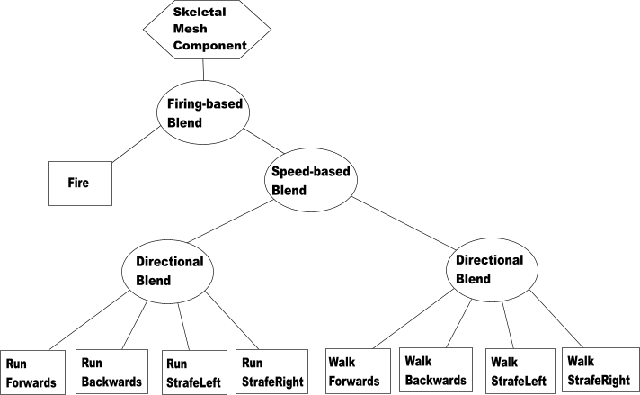
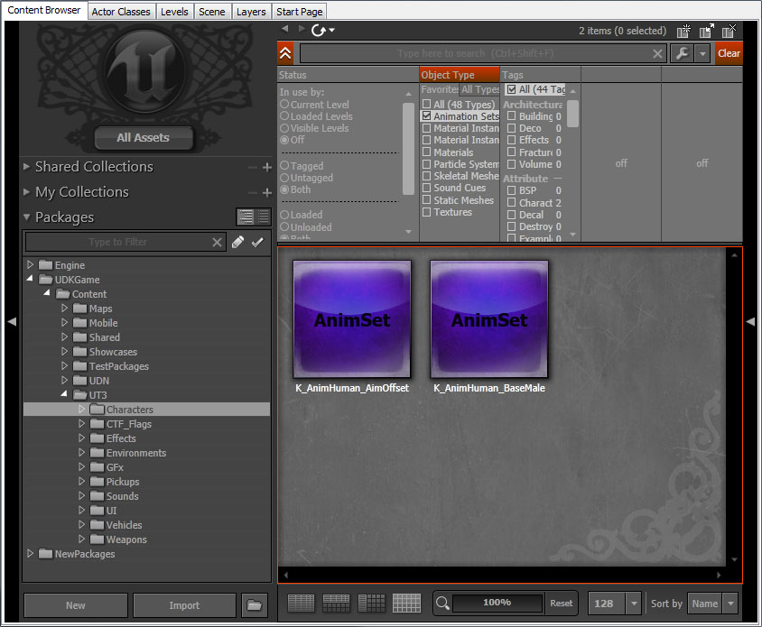

UDN
Search public documentation:
AnimationOverviewKR
English Translation
日本語訳
中国翻译
Interested in the Unreal Engine?
Visit the Unreal Technology site.
Looking for jobs and company info?
Check out the Epic games site.
Questions about support via UDN?
Contact the UDN Staff
日本語訳
中国翻译
Interested in the Unreal Engine?
Visit the Unreal Technology site.
Looking for jobs and company info?
Check out the Epic games site.
Questions about support via UDN?
Contact the UDN Staff
애니메이션 시스템 개요
문서 변경내역: James Golding 작성. Laurent Delayen 업데이트.
개요
언리얼 엔진 3 애니메이션 시스템은 렌더링된 오브젝트와 개체에 움직임을 부여합니다. 본(Bone) 애니메이션 메시는 스켈레탈 메시(Skeletal Meshes) 라고 불립니다. (마티네를 통해서만 애니메이트 가능하고, 머티리얼은 World Position Offset 을 통하는) 스태틱 메시(Static Mesh) 와 달리, 스켈레탈 메시에는 스켈레톤(Skeleton) 을 형성하는 본이 있습니다. 이 본은 메시의 동작을 조종하고 오브젝트들을 메시에 배치하는 데 사용됩니다. 애니메이션 시스템은 네 부분으로 나뉩니다. 키프레임 애니메이션 데이터의 재생, 애니메이션을 섞어 블렌딩, 본 제어, 모프 타겟 블렌딩 입니다.
파이프라인
애니메이션 시스템은 언리얼 엔진 3 파이프라인의 일부입니다. 먼저 보통 애니메이션이 처리됩니다 (애니메이션 블렌딩). 그 다음에 (Inverse Kinematic(역운동학) 등의) 본 콘트롤러가 적용됩니다. 다음 모프 타겟이 적용됩니다. 마지막으로 스켈레톤에 대한 물리입니다. 물리 하위 시스템이 나머지 물리를 처리하고, 그래픽 하위 시스템이 모든 것을 렌더합니다.

작업의 흐름
일반적으로 프로그래머와 애니메이터가 함께 필요한 애니메이션 콘텐츠를 만드는 작업을 합니다. 애니메이터는 스켈레톤을 설정하고 미리 합의된 규칙에 따라 본에 라벨을 붙입니다. 프로그래머는 파이프라인에 따라 모든 것을 한데 묶습니다 (클래스, 함수, 플래그, 등.).애니메이트된 메시
언리얼 엔진 3 에서는 애니메이트된 메시를 스켈레탈 메시 라고 합니다. 본 기반의 스켈레톤 애니메이션이 게임에서 오브젝트의 애니메이션을 이끄는 가장 중요한 메커니즘이기 때문입니다. 예전 언리얼 엔진 2 와 언리얼 엔진 1 에서도 버텍스 기반 애니메이션이 있었습니다. 키 프레임 버텍스 애니메이션은 더이상 지원되지 않습니다.애니메이션 블렌딩
Unreal Engine 3 에서는 여러 소스로부터의 애니메이션 데이터를 블렌드할 때 'Blend Tree' 라는 개념을 사용합니다. 이 방법은 다수의 애니메이션을 함께 블렌드하는 방법을 분명하게 체계화할 수 있을뿐더러, 게임을 개발하는 동안 예측 가능한 방법으로 애니메이션을 쉽게 추가할 수 있게 해줍니다.
블렌드 트리 개요
다음은 간단한 애니메이션 블렌드 트리의 예입니다:
블렌드 트리는 노드들의 트리로 되어 있습니다. 두개의 주요 노드 클래스가 있습니다.- Blend 노드 (원) - 이 노드는 한 세트의 자식을 취해서 그들을 정해진 방법으로 블렌드합니다. 블렌드에 쓰이는 기초 클래스는 AnimNodeBlendBase 입니다.
- Data 노드 (박스) - 나무의 잎에 해당됩니다. 자식을 가지고 있지 않지만, 사실상의 본 변환을 초래합니다.
블렌드 트리 구축하기
애니메이션 트리는 언리얼 에디터의 일부인 애님트리 에디터를 사용해서 구축합니다. 콘텐츠 브라우저에서 AnimTree 를 새로 만들고 더블클릭하면 애님트리 에디터에서 새로 생성된 빈 트리를 확인할 수 있습니다. 그리고 SkeletalMeshComponent 에게 다음과 같이 defaultproperties 블록에서 AnimTree 를 사용하도록 지시합니다 :
defaultproperties
{
Begin Object Class=SkeletalMeshComponent Name=SkeletalMeshComponent
SkeletalMesh=SkeletalMesh'BigCritter.CritterMesh'
AnimSets(0)=AnimSet'BigCritter.CritterAnims'
AnimTreeTemplate=AnimTree'BigCritter.CritterAnimTree'
End Object
}
AnimTree 노드
AnimTree 노드는 새로운 AnimTree 를 만들었을 때 기본으로 사용할 수 있는 노드입니다. 여기서 애니메이션 노드, 본 콘트롤러, 모프 타겟 들을 서로 연결합니다. 애니메이션 블렌드 노드와 애니메이션 시퀸스로 최종 애니메이션을 만들어냅니다. 그 다음 단계는 본 콘트롤러의 적용입니다. 이것은 한 단계로 이루어지므로 본의 순서가 중요합니다. 다음과 같은 시나리오를 예로 들겠습니다: 캐릭터가 팔을 움직이기 위해 IK 를, 그 팔의 롤본을 조종하기 위해 본 콘트롤러를 사용합니다. 여기서 IK 를 먼저 처리하고 그 다음에 롤본을 처리하여 최종 포즈를 나타내도록 하려고 합니다. 이 과제를 해결하기 위해 본의 순서를 3개의 패스로 정렬할 수 있습니다.- ComposePrePassBoneNames 제작 사전 패스 본 이름 - 먼저 제작할 본과 그 자손입니다. 보통 IK 본 체인입니다.
- ComposePostPassBoneNames 제작 사후 패스 본 이름 - 나중에 제작할 본과 그 자손입니다. 보통 롤(roll) 본입니다.
애니메이션 재생
AnimSequence
AnimSequence 는 애니메이션 노티파이같은 관련 메타데이터 정보를 가진 단일 애니메이션으로, 키프레임들의 집합입니다.AnimSet
AnimSet 은 AnimSequences 의 집합입니다. 이들은 패키지 안에 존재하며, 머티리얼, 메시 등과 같은 방식으로 콘텐츠 브라우저 에서 볼 수 있습니다.
애니메이션 세트 내 모든 AnimSequence 는 트랙 수가 같아야 하며, 그 트랙은 같은 본을 가리켜야 합니다. 이 작업은 애님세트 에디터 에서 FBX 파일을 임포트 할 때 처리됩니다.본에서 트랙으로의 매핑
AnimSet 의 트랙은 이름에 의해 스켈레탈 메시의 본과 관계됩니다. 이는 같은 애니메이션 세트를 본의 수 또는 본의 순서가 똑같지 않은 다른 스켈레탈 메시에서 재생할 경우가 있기 때문입니다. 빠른 검색을 위해 AnimSet 는 AnimSetMeshLinkup 구조의 세트를 저장하고 있습니다. 이것은 특정 스켈레탈 메시의 본과 AnimSet 트랙 사이의 매핑 테이블입니다.AdditiveAnimation (첨가 애니메이션)
AnimSequence 는 완전한 스켈레톤 애니메이션을 보관하는 것을 기본으로 합니다. 그렇지만 첨가 애니메이션을 빌드하여 사용하는 것도 가능합니다. 첨가 애니메이션은 AnimSet 에디터 내에서 두 개의 애니메이션을 빼냄으로써 빌드됩니다. 그러면 AnimTree 는 이 첨가 애니메이션을 다시 추가하기 위해 몇 개의 노드를 사용합니다. 첨가 애니메이션은 중복되는 데이터를 빼냄으로써 압축 방법으로 사용됩니다 (예를 들어 walk relaxed 와 walk aiming 에서 walk 들을 빼내고, relaxed 만을 첨가물로서 다른 것을 겨냥하도록 남겨둠). 조작이 조금 까다롭기는 하지만, 이것은 사용되는 애니메이션의 수와 사용 메모리의 양을 크게 줄여줍니다. Animation 은 AnimSet Viewer 에서 그 자체로 훌륭하게 표시되지만, 게임에서 무엇인가처럼 보이려면 그 애니메이션이 베이스 포즈에 추가되어야 합니다. 첨가 애니메이션을 추가하려면 AnimNodeAdditiveBlending 노드를 사용하거나, 요청이 있을 때 AnimNodeSlot 에서 재생하면 됩니다. 2009년 12월 QA 빌드에서부터, Additive, Target 및 Base 애니메이션은 모두 서로에 대한 참조를 보유합니다. 이 애니메이션들을 다른 AnimSet 으로 옮겨 이 참조들(패키지가 아닌)을 유지해도 괜찮습니다. Target 이나 Base 포즈의 업데이트된 버전을 가져오기 할 때, 에디터는 사용자에게 관련된 첨가 애니메이션을 재빌드할 것을 권합니다. 기존의 데이터를 업데이트하고 이들 참조를 작성하기 위해서는 FixAdditiveReferences 커맨드렛을 실행합니다.AnimNodeSequence
이것은 AnimSets 에 저장되어 있는 키프레임 데이터의 재생방법을 알고 있는, AnimNode 의 하위 클래스입니다. 이는 대개 블렌드 트리의 잎을 형성하고 있습니다. 애니메이션이 재생되는 시퀀스는 AnimNodeSequence 에 이름으로 지정되어 있습니다. AnimNodeSequence 가 AnimSequence 를 찾으려면 SkeletalMeshComponent 에서 AnimSets 배열을 조사합니다. 애니메이션 시퀀스를 포인터 대신 이름에 의해 참조하는 것의 이점은, 완전히 다른 메시/애니메이션에 대해서도 같은 트리를 사용할 수 있다는 것입니다. AnimSets 배열을 검색할 때, 이는 맨 끝에서부터 시작하여 그 이름의 AnimSequence 를 가진 AnimSet 을 찾을 때까지 거슬러 올라갑니다. 이로써 같은 이름의 시퀀스를 가지고 있는 AnimSet 을 배열의 뒤쪽에 추가, 특정 시퀀스를 덮어쓸 수 있도록 합니다.AnimGroups
서로 다른 많은 애니메이션을 함께 관리할 때는, 이 애니메이션들을 정리해서 보다 높은 레벨에서 관리할 필요가 있습니다. 이를 위해 애니메이션 시스템에서는 AnimGroups 라는 개념을 사용합니다. AnimGroups 를 이용하면, 한 꾸러미의 노드들을 함께 동기화 할 수 있고, 그룹 내에서 가장 중요한 노드만이 노티파이를 내보내도록 할 수 있으며, 모든 노드의 재생 속도를 글로벌로 조정할 수 있습니다. 이 옵션들을 적절히 배합하여 사용할 수 있으며, 모든 노드가 동기화될 필요는 없습니다.동기화
이전에는 AnimNodeSynch 라는 특별한 노드가 사용되었으나, 이는 이제 AnimGroup 시스템에 통합되었습니다. 따라서 AnimTree 어느 곳에든 AnimNodeSynch 를 사용중이라면 제거하는 것이 좋습니다. 애니메이션 동기화의 배후 논리는, 각각 다른 길이의 애니메이션을 함께 동기화 하자는 것입니다. 이것은 동작 사이클 같은 경우 보행과 주행 사이를 매끄럽게 이행할 수 있도록 하는데 매우 유용합니다. 그 방법은 애니메이션들을 상대적으로 동기화하는 것입니다. 예를 들면, 모든 동작 사이클에서 왼발은 아래에서 0%로 하고, 오른발은 아래에서 50% 로 한다든지 하는 것입니다. 보행과 주행 사이클이 늘 상대적으로 동기화되어 있도록 하면, 각각의 재생 속도를 캐릭터의 속도에 따라 변경, 각 보행 사이클간의 이행을 매끄럽게 할 수 있습니다.노티파이 (통지)
비슷한 애니메이션간에 이행할 때는, 노티파이를 처리하는 문제가 생깁니다. 그 한 예는 움직이는 애니메이션의 발소리입니다. 다른 사이클 사이를 이행할 때, 노티파이를 내보내는데 중량 한계치 기반의 시스템을 사용하면, 전혀 노티파이가 발령되지 않는 경우가 생깁니다 (때로는 여러 개의 노티파이가 한꺼번에 나올 수도 있습니다 ). 바람직한 일은 그룹에서 가장 중요한 애니메이션이 노티파이를 발령하는 역할을 맡도록 하는 것입니다. 이 문제를 해결하려면 AnimGroup 을 사용하십시오.그룹 재생 속도 제어
AnimGroups 에서는 또 애니메이션의 재생 속도를 그룹 레벨에서 제어할 수 있습니다. 이 속도는 각 애니메이션 노드별 속도에 추가되는 것이라는 점에 유의하십시요. 애니메이션 노드들은 각기 다른 다양한 속도를 가지고 있으며, 그룹 속도는 그 그룹의 모든 애니메이션 노드의 개별 재생 속도에 추가로 조정됩니다.설정
새 그룹을 만들려면 AnimTree 노드 (블렌딩 트리의 초기 노드)를 선택합니다. AnimGroups 를 확장하여 새 기재사항을 추가합니다. 그리고 'GroupName' 프로퍼티에 원하는 그룹의 이름을 적어 넣습니다. RateScale 프로퍼티는 이 그룹의 글로벌 재생 속도를 조정하는 것입니다. 그 다음, 이 그룹에 추가하고자 하는 AnimNodeSequence 노드를 선택합니다. 이제 Group 섹션을 확장해 보십시오. 거기에는 아래와 같은 프로퍼티들이 있을 것입니다:- Force Always Slave - 해당 노드는 동기화되지만 절대 마스터 노드로 선정되지 않음. |
| bSynchronize | 기본 설정값은 TRUE, 노드는 동기화 됨. 이 노드가 동기화되기를 원치 않으면 체크박스의 체크를 취소하면 됩니다. |
| SynchGroupName | 이 노드가 속해있는 그룹의 이름. 앞서 AnimTree 의 AnimGroups 배열에서 만든 그룹의 이름과 같은 이름으로 설정하십시오. |
| SynchPosOffset | 만일 이 애니메이션이 다른 것들과(왼발과 오른발이 반대인) 상대적으로 동기화되도록 제작되지 않았다면, 매치되도록 애니메이션을 오프셋 할 수 있습니다. 오프셋은 0.f 부터 1.f 까지의 상대적 위치입니다 |
배후에서 진행되는 일들
그룹 시스템은 모든 노드들이 틱된 후 두번째 패스에서 그룹 내의 모든 노드들이 업데이트 되도록 강제합니다. 이는 모든 노드들이 블렌딩 트리에서 최신의 증량을 가지도록 하기 위함입니다. 그 다음 각 그룹은 2 개의 마스터를 찾습니다. 하나는 동기화용이고 또 하나는 노티파이용입니다. 2 개의 마스터가 필요한 이유는 모든 노드들이 다 동기화될 수 있는것이 아니며, 또한 모든 노드들이 다 노티파이를 내보낼 수 있는 것이 아니기 때문입니다. 그러므로 각 범주의 리더들이 가장 적합한 노드들입니다 (동기화를 하거나 노티파이를 내보낼 수 있는, 트리에서 비중이 가장 높은 것들). 마스터 노드가 선정되면 그룹의 노드들이 모두 업데이트 됩니다. 동기화될 필요가 있는 것들은 동기화되고, 노티파이를 내보낼 필요가 있는 노드는 노티파이를 내보냅니다.언리얼스크립트 함수
- SetAnimGroupForNode(AnimNodeSequence SeqNode, Name GroupName, optional bool bCreateIfNotFound) - 기존 애님 그룹에 노드를 추가합니다.
- Seq Node - 추가시킬 애니메이션 시퀸스입니다.
- Group Name - 애니메이션 시퀸스를 추가시킬 애니메이션 그룹 이름입니다.
- Create If Not Found - 애니메이션 그룹이 없는 경우 새로 하나 만듭니다.
- GetGroupSynchMaster(Name GroupName) - 이 그룹에 대해 동기화를 돌리는 마스터 노드를 반환합니다.
- Group Name - 애니메이션 그룹 이름입니다.
- GetGroupNotifyMaster(Name GroupName) - 이 그룹에 대해 동기화를 돌리는 마스터 노드를 반환합니다.
- Group Name - 애니메이션 그룹 이름입니다.
- ForceGroupRelativePosition(Name GroupName, float RelativePosition) - 상대 위치에 강제 그룹을 맺습니다.
- Group Name - 애니메이션 그룹 이름입니다.
- Relative Position - 그룹을 설정할 상대 위치입니다.
- GetGroupRelativePosition(Name GroupName) - 그룹의 상대 위치를 구합니다.
- Group Name - 애니메이션 그룹 이름입니다.
- SetGroupRateScale(Name GroupName, float NewRateScale) - 그룹의 Rate Scale 을 조절합니다.
- Group Name - 애니메이션 그룹 이름입니다.
- New Rate Scale - 그룹에 설정할 Rate Scale 입니다.
- GetGroupRateScale(Name GroupName) - 그룹의 Rate Scale 을 구합니다.
- Group Name - 애니메이션 그룹 이름입니다.
- GetGroupIndex(Name GroupName) - 주어진 GroupName 의 AnimGroups 목록에 있는 인덱스를 반환합니다. 그룹이 없는 경우 INDEX_NONE 이 반환됩니다.
- Group Name - 애니메이션 그룹 이름입니다.
루트 모션
루트 모션을 통해 애니메이션에서 가속도 / 속도와 회전 데이터를 추출, 언리얼 엔진 3 의 피직스 시스템에 물려줄 수 있습니다. 자세한 정보는 Root Motion KR 페이지를 참고하시기 바랍니다.본 콘트롤러
애니메이션이 만들어져 서로 블렌드된 후에는 IK (Inverse Kinematics) 같은 본 콘트롤러를 적용할 수 있습니다. 이 단계 및 사용할 수 있는 노드의 타입에 대한 자세한 정보는 Using Skeletal Controllers KR 페이지를 참고하십시오.
피직스 애니메이션
피직스군과 애니메이션양의 설레이는 만남, Physical Animation KR 페이지를 확인해 보세요.
FAQ
비균등 본 스케일
- 비균등 본 스케일을 공식 지원하지는 않지만, 필요한 라이선시께서 구현하시는 데 도움이 되고자 관련된 파일을 첨부합니다.
유용한 콘솔 명령어
- show bones - 스켈레탈 메시의 렌더에 사용된 본 위치를 보여줍니다.